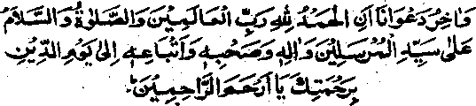

Epilogue
I am afraid this book has far exceeded its initial plan, which was to write a small book, but as I proceeded, it grew in volume and went beyond my original design. And now it has become so voluminous that few people are likely to read it thoroughly. For, nowadays, we can afford to spare little time for the study of religious books. I have, therefore, been obliged to conclude it at this point, somewhat abruptly.
May Allah, in His Infinite Mercy, help the author (who considers himself to be the most insignificant of His men and who remains ever engrossed in worldly pursuits, ever engaged in sins and acts of disobedience) to turn to Him in repentance! May Allah grant the author a dislike for this despicable world.
I began to write this book in Shawwal, 1366 A.H. But then I was prevented by circumstances to continue and had to delay its completion. I had a mind to add several other points, but have been obliged to conclude it on this day, the 22nd of Safar (Thursday night) in the year 1368 A.H. for fear of making it too large in size.

We conclude with the invocation: “Praise be to Allah, The Lord of the Worlds! And may Allah’s choicest blessings and peace be upon the most virtuous of all Rasuls and upon his family, and his Companions, and on all his followers! And for this we invoke your Mercy, O You, the Most Merciful of those who are merciful!"
Muhammad Zakariyya Kandhalvi (May Allah grant him forgiveness)
Madrasah Mazahir Uloom, Saharanpur